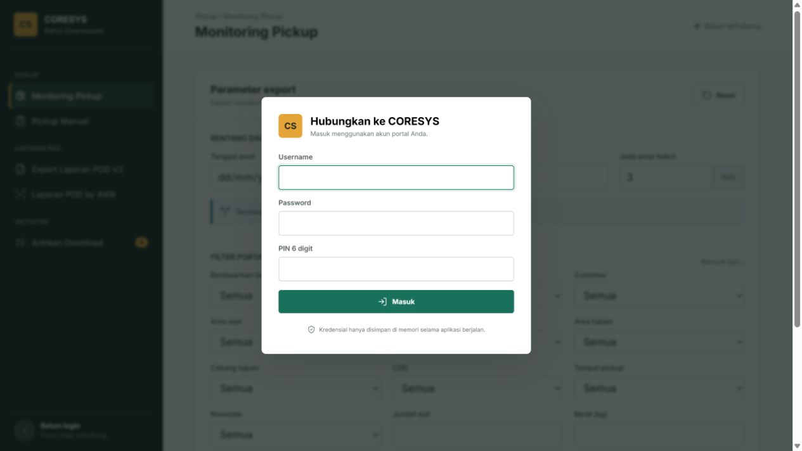

CORESYS export automation
Batch downloader untuk data operasional SAPX
Memecah rentang tanggal dan daftar AWB, menjalankan export secara berurutan, memantau proses POD, dan mengunduh hasil secara otomatis.
GitHub Pages adalah dokumentasi statis. Login CORESYS, antrean background, dan download memerlukan backend Python yang dijalankan secara lokal atau pada server privat.

Workflow yang didukung
Monitoring Pickup
Filter portal asli, pembagian rentang tanggal, serta export XLS dan XLSX.
Pickup Manual
Batch tanggal otomatis untuk laporan outstanding dan produktivitas.
Laporan POD V2
Membuat proses server, memantau status, lalu mengambil file ketika siap.
POD by AWB
Deduplikasi AWB, maksimal 10.000 per file, dan download otomatis per batch.
Alur proses
Login CORESYS
Atur filter dan batch
Proses antrean
Download otomatis
Instalasi lokal
Unduh SAPX-Data-Downloader.exe dari halaman Releases, jalankan, lalu browser akan terbuka otomatis di alamat lokal. Data tersimpan di komputer pengguna dan tidak melewati GitHub Pages.
Menjalankan dari source
python -m pip install -r requirements.txt python app.py # buka http://127.0.0.1:5177